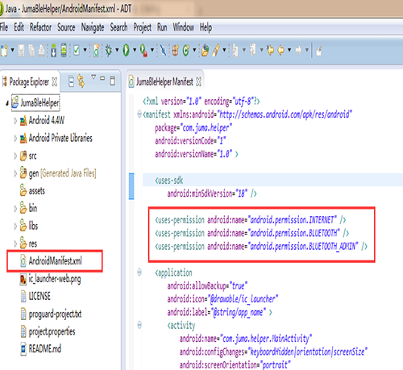

使用说明
本文介绍JUMA的Android SDK的环境搭建及其使用。
Android SDK配合嵌入式SDK共同实现设备-手机的蓝牙通信功能。相对于Android原生BLE SDK，它能确保更为稳定的蓝牙联通操作，而且使用起来更为简单，开发者不再需要了解BLE特有的如service、characteristic、notification等概念。此外，该SDK还增加了例如设备端固件空中升级(OTA)的功能。
Android环境搭建¶
1. 使用Eclipse创建Android工程¶
Step 1. 点击 File -> New -> Android Application Project.
Step 2. 输入Application Name 、Project Name 、 Package Name.
Step 3. 选择Minimum Required SDK： API 18: Android 4.3.
Step 4. 点击 Next.
Step 5. 点击Next.
Step 6. 点击Next.
Step 7. 点击Next.
Step 8. 输入Activity Name、Layout Name.
Step 9. 点击Finish.
2. 将SDK加入到工程中¶
Step 1. 将juma-sdk.jar放入到工程的libs文件夹中
Step 2. 打开AndroidManifest.xml文件 Step 3. 在AndroidManifest.xml加入以下两条权限：
<uses-permission android:name="android.permission.BLUETOOTH"/>
<uses-permission android:name="android.permission.BLUETOOTH_ADMIN"/>

SDK使用概述¶
SDK分成了三个类，需要在工程中分别对其实例化。
1. ScanHelper¶
该类用于扫描BLE设备，如开始扫描、停止扫描等BLE操作。
其中ScanCallback是一个接口，用于获取BLE设备扫描的结果，它以Callback的形式通知应用程序：
ScanHelper scanHelper = new ScanHelper(getApplicationContext(), scanCallback);
ScanHelper.getVersion();
scanHelper.enable();
scanHelper.disable();
scanHelper.isEnabled();
scanHelper.startScan(name);
scanHelper.stopScan();
scanHelper.isScanning();
ScanHelper.ScanCallback scanCallback = new ScanCallback() {
@Override
public void onScanStateChange(int newState) {
// TODO Auto-generated method stub
}
@Override
public void onDiscover(JumaDevice device, int rssi) {
// TODO Auto-generated method stub
}
};
2. JumaDevice¶
该类代表了一个BLE设备，实例化该类之后可以对一个BLE设备进行如发送数据、获取设备名称、固件升级等操作。
@Override
public void onDiscover(JumaDevice device, int rssi) {
/* 上述ScanCallback中的onDiscover回调
返回了被扫描到的蓝牙设备 */
device.connect(jumaDeviceCallback)；
device.getVersion();
device.getName();
device.getUuid();
device.disconnect();
device.isConnected();
device.send(type, message);
device.getRemoteRssi();
device.updateFirmware(url);
device.isFirmwareUpdating();
}
3. JumaDeviceCallback¶
该类用于获取与BLE设备通信相关的事件，如接收到数据、断开连接、发送数据等，以Callback的方式通知应用程序：
JumaDeviceCallback jumaDeviceCallback = new JumaDeviceCallback() {
@Override
public void onConnectionStateChange(int status, int newState) {
// TODO Auto-generated method stub
super.onConnectionStateChange(status, newState);
}
@Override
public void onReceive(byte type, byte[] message) {
// TODO Auto-generated method stub
super.onReciver(type, message);
}
@Override
public void onSend(int status) {
// TODO Auto-generated method stub
super.onSend(status);
}
@Override
public void onRemoteRssi(int status, int rssi) {
// TODO Auto-generated method stub
super.onRemoteRssi(status, rssi);
}
@Override
public void onUpdateFirmware(int status) {
// TODO Auto-generated method stub
super.onUpdateFirmware(status);
}
};
开源代码和例程¶
SDK现在已经全部开源，您可以从以下地址获取：
此外，我们还提供了一些使用SDK的例程，包括：
- BLE调试助手：https://github.com/JUMA-IO/BLE_Debugger_Android
- BLE SensorTag(传感器)：https://github.com/JUMA-IO/BLE_SensorTag_Android
- BLE Toolbox(工具箱)：https://github.com/JUMA-IO/BLE_Toolbox_Android